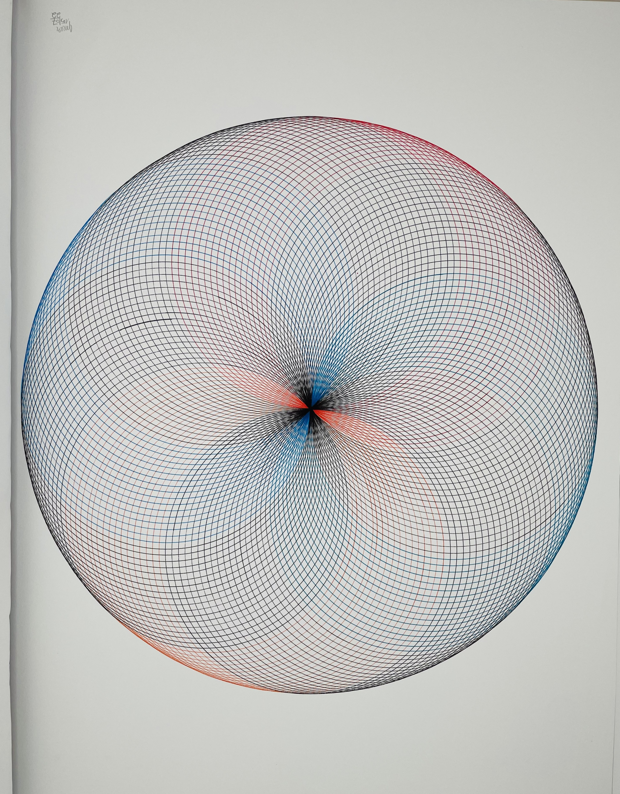

Sunlight Studies
Études de lumière
دراسات الضوء
Series — Drawing, 2022
Série — Dessin, 2022
سلسلة — رسم، 2022
Light passing through branches, breaking into patterns that shift and overlap. Drawn with compass and rule, each work a study of the same fleeting thing.
La lumière traversant les branches, se brisant en motifs qui se déplacent et se superposent. Tracées au compas et à la règle, chaque œuvre étudie la même chose fugace.
ضوءٌ يمرّ عبر الأغصان، فيتكسّر إلى أنماط تتحرّك وتتداخل. مرسومة بالفرجار والمسطرة، كل عمل دراسة للشيء العابر نفسه.

Markers (feutres and Stabilo) — 50 × 65 cm — 2022
Feutres (feutres et Stabilo) — 50 × 65 cm — 2022
أقلام (فلوماستر وستابيلو) — 50 × 65 سم — 2022

Markers (feutres and Stabilo) — 50 × 65 cm — 2022
Feutres (feutres et Stabilo) — 50 × 65 cm — 2022
أقلام (فلوماستر وستابيلو) — 50 × 65 سم — 2022